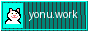

■ SNS / Community
- GitHub : https://github.com/yonu33/
- X (Twitter) : https://x.com/yonu33
- mixi2 : https://mixi.social/@yonu
- Discord : UoA Hub (Invite Link)
■ Activity
- Qiita : https://qiita.com/yonu
- Zenn : https://zenn.dev/yonu
- note : https://note.com/yonu33
- AtCoder : https://atcoder.jp/users/yonu
- YouTube : https://www.youtube.com/@yonu33
■ Contact
- Email : contact[at]yonu.work
■ リンク用バナー ■
